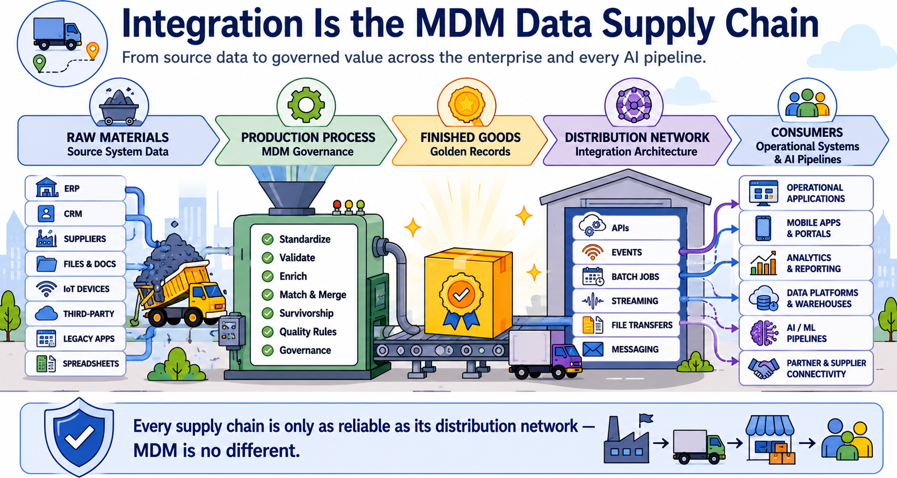
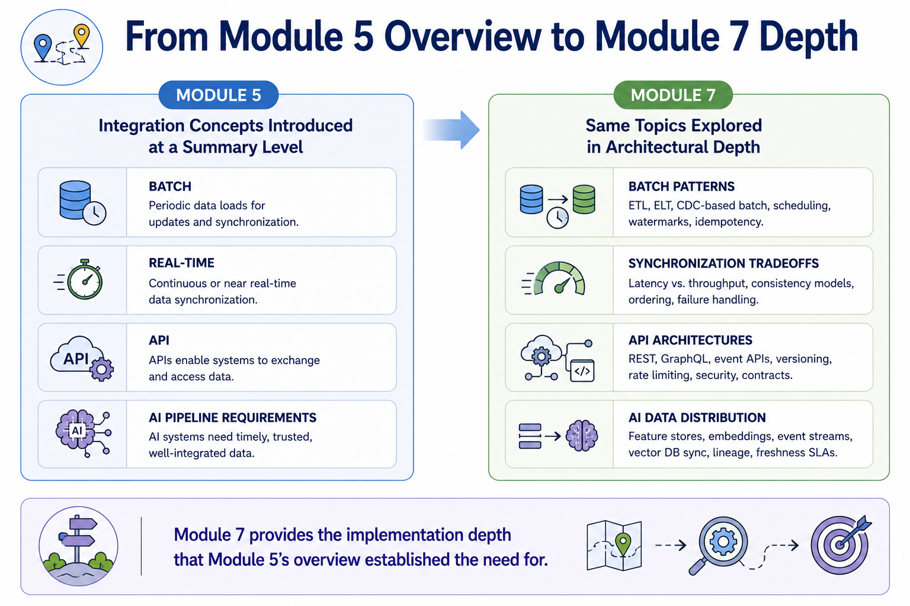

Integration Approaches
Module support notes
Integration as the MDM Data Supply Chain
Integration is the distribution network of the MDM program. Even the most carefully governed master data has no organizational value if it cannot be reliably delivered to the systems and people who need it. The reliability, currency, and completeness of that delivery — determined by the integration architecture — directly determines the reliability, currency, and completeness of the governed data that AI systems train on, reference at inference time, and monitor for drift.
Treating integration as a technical plumbing concern separate from MDM strategy consistently produces programs whose governance quality exceeds their integration reach — and whose AI programs therefore operate on data that is less trustworthy than the MDM platform could provide.
Note
Every supply chain is only as reliable as its distribution network — MDM is no different. A program can achieve excellent matching accuracy, strong survivorship rules, and well-designed governance, and still fail to deliver AI-ready data if the integration architecture is unreliable, slow, or incomplete in its coverage of the systems and pipelines that need governed data.

How Module 7 Builds on Module 5
Module 5 introduced integration as one component of the MDM technology ecosystem — establishing why it matters and what types exist. Module 7 goes significantly deeper, examining the specific architectural patterns that implement each integration type, the tradeoffs that govern synchronization decisions, and the mechanisms that maintain consistency across systems that may be updated at different rates and from different sources.
Learners who carry the Module 5 overview into Module 7 will find that the depth here resolves many of the "how exactly" questions that the overview intentionally deferred.
Warning
Every integration decision has a direct consequence for AI data quality, currency, and completeness. Integration is not a technical afterthought — it is a strategic decision with lasting AI consequences. The architecture chosen today determines how fresh the data is that AI systems operate on, how completely governed records reach every system that needs them, and how quickly quality problems can be detected and resolved across the landscape.

Module 7 covers integration as a five-stage architecture journey — from the foundational patterns through to the consistency mechanisms that keep governed data trustworthy everywhere it travels.
![A five-stage horizontal flow showing the Module 7 integration architecture journey: System Integration Patterns — the architectural blueprints; APIs and Event-Driven Architectures — the technologies; Batch vs. Real-Time — the synchronization choices; Data Distribution — how governed data reaches consumers; Cross-System Consistency — how it stays consistent when it gets there. A banner beneath all five reads: Every integration decision has a direct consequence for AI data quality, currency, and completeness.](../assets/m7-module-overview.png)